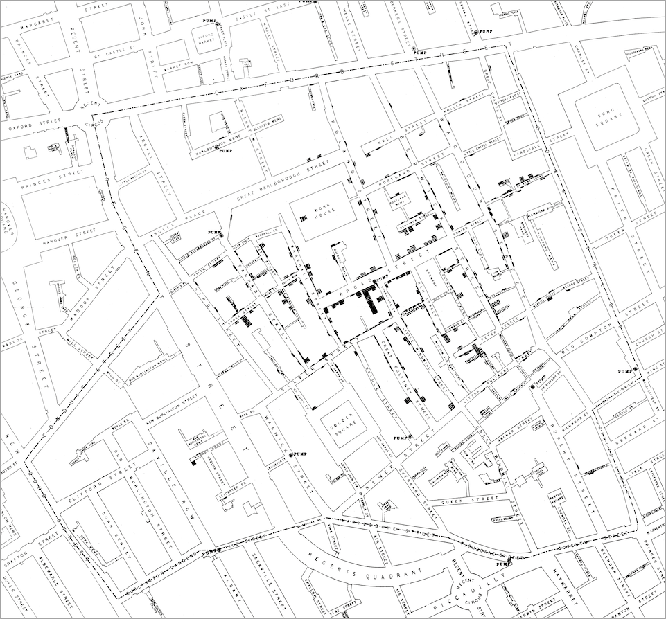
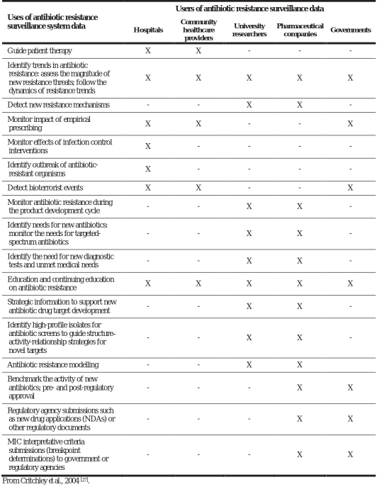

1 General Introduction
1.1 Microbial epidemiology
Epidemiology is the medical scientific field that investigates all the factors that determine the presence or absence of diseases and disorders. While many subspecialties within this field exist nowadays, such as veterinary epidemiology and cardiovascular epidemiology, its development started with an infectious disease. Between 1846 and 1860, the world endured the third cholera pandemic, taking assumably millions of lives [1]. The year 1854 was considered the worst year, when 23,000 people died in the United Kingdom, out of 16 million inhabitants (0.14%) [2]. As a side note, this is still quite less than the 146,000 UK deaths due to COVID-19 out of 56 million inhabitants (0.26%) until March 2021 [3]. But 1854 was also the year that the basis was laid for the field of epidemiology by John Snow, an English physician and hygiene specialist.
At the time of a local cholera outbreak at the Broad Street in London in that year, Snow did not know the exact source of cholera and called it ‘cholera poison’ in a book he published in 1856 [4]. Interestingly, the Italian Filippo Pacini managed to isolate the bacterium causing cholera, Vibrio cholerae, in 1854 – the same year that Snow investigated the outbreak [5]. Although it was not until 1884 that V. cholerae was formally given its name by the German Robert Koch [6].
In his book about the ‘cholera poison’ , Snow famously wrote [4]:
There is no doubt that the mortality was much diminished, as I said before, by the flight of the population, which commenced soon after the outbreak; but the attacks had so far diminished before the use of the water was stopped, that it is impossible to decide whether the well still contained the cholera poison in an active state, or whether, from some cause, the water had become free from it.
For this reason, Snow hypothesised that the local outbreak was caused by poisoned water coming from a water pump. To investigate the number of cases, he drew one of the most well-known data visualisations in epidemiology, Figure 1.1 (top). In this then-novel form of data visualisation, he counted the cases per household and denoted them as stacked rectangles. This resulted in his conclusion that there had been no particular outbreak or prevalence of cholera in that part of London except among the persons who were in the habit of drinking the water of one specific water pump: the one on Broad Street. The handle of the pump was removed on the day following his briefing to the local government, leading to an end of the outbreak.
With the advancements in information technology, heatmaps would nowadays be a more effective way to visualise geographic trends, Figure 1.1 (bottom). Using modern map data as illustrated, the incredible accuracy of Snow’s drawing of London from 167 years ago is also highlighted. The type of investigating geographic trends in health and disease is nowadays known as spatial epidemiology.
Figure 1.1: Visualisations of the ‘Broad Street cholera outbreak’ in London in 1854. Top: original map as drawn by John Snow. Bottom: Snow’s original map with a self-made heatmap visualisation overlay, based on the geographic position of the cases. The blue circles (n = 13) indicate the location of the water pumps.
Spatial epidemiology is one example of the many different specialities in the field of epidemiology. Another example is the direct consequence of Snow’s work: infectious disease epidemiology, which has developed widely since the nineteenth century and has become the de facto standard for researching diseases and their health effects caused by pathogens (i.e., bacteria, viruses and fungi). Since this speciality concerns pathogens, it is a domain shared by the fields of epidemiology and clinical microbiology (Figure 1.2). Moreover, infectious disease epidemiology can be split into two subspecialties: clinical (infectious disease) epidemiology and microbial epidemiology. The former focuses on the properties of the disease (such as the burden of disease caused by infection, or the disease-related mental and financial costs), while the latter focuses on the properties of the pathogen (such as the credibility of its source, antimicrobial resistance and pathogenicity).
Applying microbial epidemiology was barely possible in the days of John Snow, for the lack of scientific knowledge about pathogens and the lack of advancement in information technology. Antibiotics were not discovered yet, the cause of cholera was undetermined, and scientists had no clue about the infectivity and pathogenicity of different bacteria. However, what John Snow did in 1854 ‘clinical epidemiologically,’ is in essence quite equal to what we currently do on a large scale during the COVID-19 pandemic. Information technology required to attain this large scale has brought us not only the possibilities to look beyond regional, national and international borders but to observe, analyse and understand pandemics in real-time. Methods we develop and use today can be implemented on the other side of the world tomorrow. This is an important advantage in modern infectious disease epidemiology, as is also illustrated in this thesis.
Microbial epidemiology has an important focus on observing and analysing (1) the microorganisms that cause infections and the human site of origin, (2) the intrinsic or acquired antimicrobial resistance they manifest, and (3) their infectivity and pathogenicity. As any type of microorganism – bacteria, viruses and fungi (including yeasts) – can cause infections in humans, microbial epidemiology is not limited to a certain type of microorganism. Nonetheless, there tends to be a stronger focus on bacteria and fungi, which are more easily isolated at a clinical microbiology laboratory than viruses and can be tested for phenotypical antimicrobial resistance in a routine diagnostic setting. Based on these diagnostic findings, treatment guidelines are developed and evaluated. This in itself urges microbial epidemiology to be employed in a routine setting as well, to make sure that treatment guideline development continually has a solid epidemiological basis.
Figure 1.2: Overview of the diverse sections and subspecialties of epidemiology and clinical microbiology and their common field: infectious disease epidemiology. Microbial epidemiology can be considered to be a subspecialty of infectious disease epidemiology.
1.2 Antimicrobial resistance in microorganisms
The antimicrobial resistance (AMR) that manifests in bacteria and fungi, is central within the diverse field of microbial epidemiology. It occurs when microorganisms develop mechanisms that protect them from the effects of antimicrobial agents, such as antibiotics [7]. AMR occurring specifically in bacteria is often termed antibiotic resistance (ABR). An important distinction should be made between intrinsic AMR (that is, AMR inherently present in certain microbial species as a distinctive property of that species) and acquired AMR (that is, AMR present in some strains of a certain microbial species induced by the presence of an antimicrobial agent). Infections caused by microorganisms that are resistant to one or more antimicrobial agents cannot be treated with those antimicrobial agents anymore.
AMR is a global health problem and of great concern for human medicine, veterinary medicine, and the environment alike. It is associated with significant burdens to both patients and health care systems. Current estimates show the immense dimensions we are already facing, such as claiming at least 50,000 lives due to AMR each year across Europe and the US alone [8]. Although estimates for the burden through AMR and their predictions are disputed by some, the rising trend is undeniable, thus calling for worldwide efforts to tackle this problem [9,10]. For this reason, laboratory diagnostics are of utmost importance for generating AMR results that can be used to acquire new or improved AMR insights by conducting microbial epidemiology.
1.2.1 Laboratory diagnostics
From clinical illness alone (such as fever, redness, swelling, pain, and loss of function), it is impossible to determine whether the microorganism causing the infection is drug-resistant; it requires laboratory diagnostics to measure AMR. For decades, clinical microbiological laboratories have been using techniques where a defined amount of a microbial isolate is brought unto the medium of an agar plate [11]. This technique is called the ‘disk diffusion test’ and was first used by Dutch botanist Martinus Beijerinck in 1889 to study the effect of auxins (a class of plant hormones) on bacterial growth [11,12]. The technique has been further developed and refined by the American microbiologists William Kirby and Alfred Bauer in 1959 and 1966, leading to this test technique sometimes being referred to as the ‘Kirby-Bauer test’ or ‘KB test’ [13,14]. To perform the test, small filter paper disks containing a specified concentration of different antimicrobial agents are laid on the agar medium containing the microorganism, which is subsequently incubated for 18 to 24 hours at a specified temperature. During the incubation, the antimicrobial agent (antibiotic or antifungal) will radially diffuse over the agar, leading to high antimicrobial concentrations near the disk and low antimicrobial concentrations away from the disk. A disk typically has a diameter of 6 millimetres. After the incubation, the growth inhibition zone around the disk can be measured with a ruler. The wider the growth inhibition zone, the lower antimicrobial concentrations are required for the microorganism to inhibit growth. The narrower the growth inhibition zone, the higher antimicrobial concentrations are required for the microorganism to inhibit growth. The range of a disk diffusion test result is typically 6 to 50 millimetres.
Although disk diffusion tests is being widely used in many areas, some laboratories have replaced them with an automated incubator allowing colourimetric detection of CO2 produced by growing microorganisms in the presence of antimicrobial agents [15–17]. Growth is subsequently optically measured for different concentrations and different antimicrobial agents. The concentration that inhibits at least 99.99% growth of the microorganism, is denoted the minimum inhibitory concentration (MIC) and is typically expressed in milligrams per litre (mg/L). These incubators are referred to as antimicrobial susceptibility testing (AST) devices. AST devices allow for timely and reproducible results. Yet, the cartridges used for this type of instrument have a limited number of wells to test different manufacturer-set concentrations and types of antimicrobial agents. Since this limitation thus disallows testing for any desired concentration, MICs are often capped at a minimum or maximum value. For example, an actual MIC could be 128 mg/L, although the highest available concentration on a cartridge could be 32 mg/L. In such cases, the MIC will be reported as ≥ 32 mg/L. This is a technical limitation of colourimetric detection of CO2 production as a test technique, which brings important disadvantages for microbial epidemiological analyses. Capped values (such as ≤ 0.0125 mg/L and ≥ 32 mg/L) hinder comparison with previous findings or findings from other laboratories as they might conceal the true MICs. Furthermore, different cartridges may be used for bacteria isolated from different specimen types (such as urine or blood), which can yield different ranges of the resulting MICs. For example, an isolate of Staphylococcus aureus from a urinary tract infection could be tested for many concentrations of only a few orally available antibiotics using cartridge A, while an isolate of S. aureus from a complex surgical wound could be tested for only a few concentrations of many intravenously available antibiotics using cartridge B. Consequently, the MIC of e.g., ciprofloxacin could be reported as ≤ 0.0625 mg/L using cartridge A, while it could be reported as ≤ 0.125 mg/L using cartridge B, even when the S. aureus isolates are identical. This makes it hard to compare results in epidemiological data analyses as the data availability can (unknowingly) be unequal, potentially affecting the outcome of any AMR data analysis.
1.2.2 Interpretation of raw results
When raw AMR testing results are available, they are not yet suitable for reporting back to clinicians. The growth inhibition zones of disk diffusion tests and the MICs from the colourimetric detection tests need interpretation to consider an antimicrobial agent suitable for treatment. Typically, AMR is interpreted and reported as either (a tri-form abbreviated as ‘RSI’):
R = resistant. A microorganism is categorised as ‘resistant’ when there is a high likelihood of therapeutic failure even when there is increased exposure.
Exposure is a function of how the mode of administration, dose, dosing interval, infusion time, as well as distribution and excretion of the antimicrobial agent will influence the infecting organism at the site of infection.S = susceptible. A microorganism is categorised as ‘susceptible’ when there is a high likelihood of therapeutic success using a standard dosing regimen of the agent.
I
(according to CLSI) I = intermediate. A microorganism is categorised as ‘intermediate’ when there is an unsure likelihood of therapeutic success. Additionally, CLSI considers a susceptible dose-dependent (SDD) category for certain drug and organism combinations, for which the susceptibility of an isolate depends on the dosing regimen used.
(according to EUCAST) I = Susceptible, increased exposure. A microorganism is categorised as such when there is a high likelihood of therapeutic success because exposure to the agent is increased by adjusting the dosing regimen or by its concentration at the site of infection.
For this interpretation of raw AMR test results, international guidelines exist. The most often applied guidelines are supplied by the Clinical and Laboratory Standards Institute (CLSI) and the European Committee on Antimicrobial Susceptibility Testing (EUCAST) [18,19]. In Europe, an increasing number of clinical laboratories apply EUCAST guidelines, as it was shown that the coverage of EUCAST guidelines among these laboratories was 73.2% in 2013, and only a few European countries did not use the EUCAST methodology in 2019 [20,21]. According to the World Health Organisation (WHO), guidelines from CLSI and EUCAST are adopted by 94% of all countries reporting AMR to the Global Antimicrobial Resistance Surveillance System (GLASS) of the WHO [22].
Generally, AMR is defined as the proportion of resistant microorganisms (R) among all tested microorganisms of the same species (R + S + I). The CLSI and EUCAST guidelines define the interpretations for the most common combinations of pathogenic microorganisms and antimicrobial agents. For example, the EUCAST 2021 guideline considers ciprofloxacin against Escherichia coli to be susceptible when either the MIC is at most 0.25 mg/L or when a diffusion disk with 5 µg has a growth inhibition zone of at least 25 millimetres (Figure 1.3).
In 2017, EUCAST implemented the area of technical uncertainty (ATU) for certain microbial species/antibiotic combinations, to warn laboratory staff that the interpretation of routine susceptibility testing is uncertain [23]. For example, disk diffusion results from the combination of any species in the order of Enterobacterales with amoxicillin/clavulanic acid are considered unreliable for a zone diameter of 19-20 mm in the latest EUCAST interpretation guideline [24]. EUCAST advises to rerun the test, perform an additional test, or to report this uncertainty with a clear warning [23].
Figure 1.3: Interpretation of 100 random minimum inhibitory concentrations (top) and 100 random disk diffusion growth inhibition zones (bottom) of ciprofloxacin in Escherichia coli, interpreted using colours according to the EUCAST 2021 guideline. These plots were generated with the AMR package for R.
To mitigate the risks of laboratories reporting erroneous susceptibility results, CLSI and EUCAST guidelines are also provided as “expert rules” in the previously mentioned AST devices, which helps to ensure compliance with guidelines and standards, increasing the quality of AMR data [25].
Analysing AMR data, such as raw MICs and antimicrobial interpretations (‘RSI’), is tedious and complex, especially when evaluating cumulative AMR reports [26]. Nonetheless, it is essential to monitor up-and-coming AMR trends at the local and regional level to support clinical decision-making, infection control interventions, and AMR containment strategies [27,28]. AMR data analysis has been challenged by poor comparability of antimicrobial susceptibility statistics between institutions because of the diversity of calculation methods [26]. Moreover, many laboratories have used simplistic calculation approaches, with a strong tendency to overestimate drug resistance rates [26]. In the first ten years of this century, it was shown that this was primarily attributed to the lack of correction for duplicate isolates [29–31].
In an attempt to overcome this, CLSI started in 2002 with developing guidelines to recommend epidemiologically sound workflows for the analysis and presentation of AMR results and trends, with their fourth and currently latest version released in 2014 [32]. These guidelines comprise advice on the inclusion of a minimum number of isolates, the choice of antimicrobial agents to analyse, and the presenting of numbers and percentages of AMR. In 2007, Hindler et al. evaluated the then-latest version of this guideline [26]. They concluded that although CLSI provided a comprehensive collection of suggestions, only a few publications had implemented these practical recommendations. Nevertheless, it continuously provides a theoretical basis for microbial epidemiological analyses but lacks suggestions of how these theoretical recommendations can be implemented practically or what kind of software would be suitable to analyse AMR data and, more specific, AMR data about multi-drug resistant organisms.
1.2.3 Multi-drug resistant organisms
Multi-drug resistant organisms (MDROs) are microorganisms that acquired AMR to at least one antimicrobial agent in multiple antimicrobial categories. Because of MDROs, there are countries in many parts of the world where antimicrobial treatment is ineffective in more than half of all patients [33]. Common MDROs include vancomycin-resistant enterococci (VRE), methicillin-resistant Staphylococcus aureus (MRSA), extended-spectrum β-lactamase (ESBL) producing Gram-negative bacteria such as E. coli and Klebsiella pneumoniae, carbapenemase-producing Gram-negative bacteria, third-generation cephalosporin (3GC) resistant Gram-negative bacteria and carbapenemase-producing Gram-negative bacteria.
In 2012, MDROs were formally categorised into different degrees of severity in favour of international comparison purposes [34]. Multi-drug resistance (MDR) was defined as acquired AMR to three or more antimicrobial categories, extensive drug resistance (XDR) was defined as acquired AMR to all antimicrobial agents except in two or fewer antimicrobial categories, and pan-drug resistance (PDR) was defined as acquired AMR to all antimicrobial agents in all antimicrobial categories [34]. MDR among microorganisms is very common, PDR is very uncommon [7,33,35]. In 2014, the WHO published a report in which they performed five systematic reviews involving 221 studies with a special focus on MDR bacteria (defined as MRSA, 3GC/fluoroquinolone-resistant E. coli, and 3GC/carbapenem-resistant K. pneumoniae) [36]. The outcomes of this report underlined the increasing necessity of surveillance programs.
1.2.4 Surveillance programs
With the current WHO surveillance program GLASS, the overall coverage of AMR is continuously being monitored for most countries of the world [37]. For Europe, the prevalence of AMR on the country level is monitored by national surveillance programs that share their data with the European Centre for Disease Prevention and Control (ECDC), an agency of the European Union [38]. Their surveillance program European Antimicrobial Resistance Surveillance Network (EARS-Net) is the largest publicly funded system for AMR surveillance in Europe. Public access to descriptive data (maps, graphs and tables) are available through the ECDC Surveillance Atlas of Infectious Diseases [38], which was also consulted for multiple studies in this thesis. While the ECDC estimated in 2009 that bacterial infections caused by MDROs were responsible for 25,000 extra deaths per year [39], others found that there is a large discrepancy between the real count of deaths attributable to MDROs and the subsequent alarmist predictions, based on data from over 500 studies [35].
Although surveillance programs allow for signalling significant differences and shifts in AMR rates, additional AMR data analyses and AMR surveillance studies are strict requirements to fully understand the continuous development in AMR rates as there is no “ideal” surveillance system covering all aspects [28]. Nonetheless, the desire to continuously monitor, analyse, model and predict AMR, has led to the increased development and use of local, regional, national and international surveillance systems [27]. Critchley et al. have inventoried the requirement set by different types of users (Table 1).
On the local level, clinical microbiology laboratories should communicate AMR surveillance data to healthcare providers in an understandable manner. Since MDROs can migrate between healthcare institutions, countries and continents by migrating people, local healthcare providers should be aware of local, regional, national and international surveillance program implementations and their ensuing results on AMR. On the other hand, such surveillance program implementations should be well-designed, well-maintained, longitudinal, and involve an appropriate collaboration with local laboratories over time [27].
Table 1. Uses of antibiotic resistance surveillance system data by hospitals, university researchers, pharmaceutical companies and governments. From Critchley et al., 2004 [27].

As an example, ISIS-AR (Infectious disease Surveillance Information System for Antibiotic Resistance) is a Dutch national surveillance program, for which a large number of the Dutch clinical microbiology laboratories provide anonymised data on AMR to the National Institute for Public Health and the Environment (Rijksinstituut voor Volksgezondheid en Milieu, RIVM) [40]. In Germany, ARS (Antibiotic Resistance Surveillance) is a similar laboratory-based national surveillance program, that attempts to enable differential statements according to structural characteristics of health care and regions [41,42]. Both these national surveillance programs provide data for EARS-Net and GLASS of the WHO [37,43].
1.3 Data analysis using R
In academia, the free and open-source statistical language R is an increasingly popular tool for analysing study results and developing new scientific methods, especially in medical fields such as human genetics, health decision sciences, and proteomics [44–47]. Even more so, a new type of study seems to currently arise where researchers from different medical fields publish tutorials on how to acquire new insights using R as a programming language [48–50]. In 2020, R ranked 8th in the TIOBE index, a global initiative to measure the popularity of programming languages, while it ranked 73rd in 2008 [51].
R was developed for statistical computing and graphics supported by the R Foundation for Statistical Computing [52,53]. It is freely available under the GNU General Public License v2, meaning that it may be used for both private and commercial purposes in any way, but not for patent purposes. As a statistical package, it is comparable to the proprietary software programs Stata, SAS and SPSS [54]. However, as opposed to these proprietary software programs, R has an open file format and can read data from any source, including files from other software programs, and websites. Moreover, the ‘base’ functions of R are extendible by users who develop so-called packages for R. The Comprehensive R Archive Network (CRAN) that hosts and maintains R through the R Foundation for Statistical Computing, accepts package submissions from users and subjects users to a peer-review submission process and a strict repository policy [53,55]. As of May 2021, the CRAN package repository features 17,671 available packages.
Not only the popularity of using R has increased over the last decade. The number of developed packages has also increased strongly over the last years, especially since 2016 (Figure 1.4). This is probably attributed to a rather new integrated desktop environment (IDE) to use R, called RStudio [56]. RStudio is also the name of the corporation that developed the RStudio IDE and authored the so-called tidyverse, a collection of R packages (such as dplyr and ggplot2) that are specifically designed to ease data importing, tidying, manipulating, visualising, and programming, as well as to improve code reading [57–59]. The tidyverse can be used for most data analytical tasks and has been the method of choice for numerous (clinical) studies, including those presented in this thesis.
Figure 1.4: The number of R packages by date of the last update over the last ten years. Every bar represents one month. Every R package occurs once in this figure.
For microbial epidemiology, no particular R packages were available to analyse phenotypic AMR test results as of 2017. One R package that provides approaches to work with disk diffusion zone diameters and MICs from environment samples started development in 2018, but still has no released version as of May 2021 [60]. For ‘non-microbial’ infectious disease epidemiology, however, outbreaks and epidemics could already be analysed with dedicated packages in R [61–65]. Most of these packages were developed within RECON, the R Epidemics Consortium, that gathers experts in data science, modelling methodology, public health, and software development to create the next generation of analytics tools in R for informing the response to disease outbreaks, health emergencies and humanitarian crises. Their R package EpiEstim is being used worldwide for calculating and presenting reproduction rates of SARS-CoV-2 during the ongoing COVID-19 pandemic, also by the Dutch National Institute for Public Health and the Environment (RIVM) [65,66].
1.4 Setting for this thesis
Studies within this thesis were geographically organised or initiated in the Northern cross-border region of the Netherlands and Germany, Figure 1.5. According to the German philosopher Liessmann, there are only national borders defined by humans, but no natural borders [67]. He explained that borders as man-made conventions are never absolute, but that it is always possible to cross them. Despite the existing territorial border, there are many similarities in the Netherlands and Germany today, but just as many and clear differences, especially concerning the healthcare sector. A German patient can become a patient in the Netherlands just as quickly as a Dutch patient can in Germany. Since pathogens know no borders, patient protection and infection prevention must not stop at borders [68]. The Netherlands and Germany have, among many other matters, apparent differences within the healthcare system in general and in terms of AMR, especially concerning MDRO definitions and infection prevention guidelines. To study these differences, INTERREG programs enable cross-border, transnational and interregional cooperation. INTERREG is one of the central instruments in European cohesion and regional policy, with which the development differences between the European countries in the border regions should be reduced and economic cohesion strengthened. It aims to ensure that national borders are not an obstacle to the balanced development and integration of the European territory [69]. One of its programs, EurHealth-1Health, was a large research project that aimed to facilitate working together in battling AMR and MDROs and to empower sustainable collaborations across the border.
Figure 1.5: Geographic overview of three Euregio’s that make up most of the Dutch-German cross-border region.
In the Northern Netherlands, five clinical microbiological laboratories together conduct the microbiological diagnostics for more than two million Dutch inhabitants in primary care, secondary care (non-university hospitals) and tertiary care (university hospital). Three of these five are regional non-profit laboratories: Izore in Leeuwarden (Friesland), Certe in Groningen (Groningen) and LabMicTA in Hengelo (Overijssel). The other two laboratories are hospital departments of the Isala hospital in Zwolle (Overijssel) and the University Medical Center Groningen. On the other side of the border in Germany, laboratories are more numerous, more centralised, often privatised, and organised on a different scale than in the Netherlands. This is largely due to a higher number of small hospitals in Germany compared to the Netherlands, which is inherent to the different healthcare structures. In 2018, Germany had 2.33 hospitals per 100,000 inhabitants (1 hospital per 43,010 inhabitants), while in the Netherlands this was 0.68 hospitals per 100,000 inhabitants (1 hospital per 148,113 inhabitants), almost 3.5 times less [70–73].
These differences posed important reasons to research the effects of having different national guidelines regarding AMR (and MDRO interpretations) and screening guidelines, as is investigated in this thesis.
1.5 Aim of this thesis and introduction to its chapters
This thesis aims to present the development of a new instrument for microbial epidemiology – a new and open method for standardised AMR data analysis – while also providing applied examples of how this new instrument has empowered AMR data analysis in regional and euregional studies.
This thesis is presented in four sections.
SECTION I opens with a broad introduction to the usefulness and necessity of having timely diagnostic information in chapter 2. Diagnostic stewardship programs (DSP) are a requirement to gain answers instead of results, including those from a clinical microbiology laboratory. DSP is a multidisciplinary approach to gain the most benefit for the patient by democratising different medical specialities. In chapter 3, the usefulness and necessity of having a dedicated tool for microbial epidemiology are introduced, through the AMR package for R as a new instrument. It is explained why microbial epidemiology and its effects are hindering efforts to dispose of AMR trends and how the AMR package for R can compensate for this. This chapter was primarily intended for non-data-technical professionals who work in the field of infectious diseases, such as clinical microbiologists and infectiologists.
SECTION II outlines the working and implementation of the AMR package for R. It starts with explaining this newly developed instrument in chapter 4. In this methodological and technical paper, the working mechanisms of the AMR package for R are thoroughly described. It is demonstrated that the AMR package enables standardised and reproducible AMR data analyses, including the application of evidence-based rules, determination of first isolates, translation of various codes for microorganisms and antimicrobial agents, determination of (multi-drug) resistant microorganisms, and calculation of antimicrobial resistance, prevalence and future trends. This chapter was primarily intended for data-technical professionals who work in the field of microbiology, such as (infectious disease) epidemiologists and biostatisticians. For chapter 5, the AMR package was implemented in a newly developed web application to present the design, development, and testing of RadaR (Rapid analysis of diagnostic and antimicrobial patterns in R), a software app for infection management, and to ascertain whether RadaR can facilitate user-friendly, intuitive, and interactive analyses of large datasets in the absence of prior in-depth software or programming knowledge. Subsequently, in chapter 6, we aimed at demonstrating and studying the usability of our developed approach and its impact on clinicians’ workflows in a typical scenario. By comparing traditional software methods such as Excel and SPSS with an online implementation of our new instrument, we tried to establish the benefit of using dedicated tools in a clinical situation.
SECTION III provides real-life examples of how the new instrument was used in studies that focus on AMR data analysis, in the Northern Dutch region as well as the Northern cross-border region of the Netherlands and Germany. Chapter 7 brings a thorough analysis of the occurrence and antibiotic resistance of coagulase-negative staphylococci (CoNS) in the Northern three provinces of the Netherlands, by analysing almost 20,000 antibiograms. Since 2013, all regional clinical microbiological laboratories make use of matrix-assisted laser desorption/ionisation time-of-flight (MALDI-TOF) mass spectrometry to identify microbial isolates to the species level. Using the AMR package for R, all relevant antibiotic results could be analysed for all different CoNS species that were found during the study period (2013-2019). In chapter 8, country-specific guidelines for determining MDROs in the Netherlands and Germany were compared in this border region. This was done by interpreting all isolates found on both sides of the border with the national guidelines from both countries. Major differences were observed, which also imply a strong challenge for healthcare personnel working in the border region. Isolate selection and MDRO determination on the Dutch side of the border was carried out using the AMR package. Chapter 9 outlines the euregional epidemiology of methicillin-resistant Staphylococcus aureus (MRSA) by analysing results from 42 hospitals. MRSA colonisation, infection and bacteraemia rate trends were described from the Dutch-German border region hospitals between 2012 and 2016. Although measures for MRSA cases were similar in both countries, defining patients at risk for MRSA differed. For chapter 10, twenty-three hospitals in the Dutch-German border region participated in a prospective screening study for the determination of the carriage of multi-drug resistance on admission to intensive care units (ICU), including more than 3,000 patients. The screening compliance, hospital and ICU sizes, and outcome of AMR data analysis were compared between both sides of the border.
SECTION IV summarises the presented work and provides future perspectives.
References
- Hays JN. Epidemics and pandemics: their impacts on human history. Santa Barbara, Calif.; 2005.
- Paneth N, Vinten-Johansen P, Brody H, Rip M. A rivalry of foulness: official and unofficial investigations of the London cholera epidemic of 1854. Am J Public Health 1998;88:1545–53. doi:10.2105/AJPH.88.10.1545.
- Office for National Statistics. Deaths with COVID-19 on the death certificate. 5 March 2021 2021. https://coronavirus.data.gov.uk/details/deaths (accessed March 21, 2021).
- Snow J. On the Mode of Communication of Cholera. Edinb Med J 1856;1:668–70.
- Pacini F. Osservazioni microscopiche e deduzioni patologiche sul cholera asiatico. Gazz Medica Ital Toscana 1854;4:397–401.
- Howard-Jones N. Robert Koch and the cholera vibrio: a centenary. BMJ 1984;288:379–81. doi:10.1136/bmj.288.6414.379.
- World Health Organization. Antimicrobial resistance Fact sheet N°194. April 2014 2014. https://www.who.int/mediacentre/factsheets/fs194/en/ (accessed March 21, 2021).
- O’Neill J. Antimicrobial Resistance: Tackling a Crisis for the Health and Wealth of Nations. Rev Antimicrob Resist 2014:1–16.
- de Kraker MEA, Stewardson AJ, Harbarth S. Will 10 Million People Die a Year due to Antimicrobial Resistance by 2050? PLOS Med 2016;13:e1002184. doi:10.1371/journal.pmed.1002184.
- Centers for Disease Control and Prevention (CDC). AR Threats Report: Antibiotic Resistance Threats In The United States. 2019.
- Humphries RM, Kircher S, Ferrell A, Krause KM, Malherbe R, Hsiung A, et al. The Continued Value of Disk Diffusion for Assessing Antimicrobial Susceptibility in Clinical Laboratories: Report from the Clinical and Laboratory Standards Institute Methods Development and Standardization Working Group. J Clin Microbiol 2018;56. doi:10.1128/JCM.00437-18.
- Wheat PF. History and development of antimicrobial susceptibility testing methodology. J Antimicrob Chemother 2001;48:1–4. doi:10.1093/jac/48.suppl_1.1.
- Bauer AW, Kirby WMM, Sherris JC, Turck M. Antibiotic Susceptibility Testing by a Standardized Single Disk Method. Am J Clin Pathol 1966;45:493–6. doi:10.1093/ajcp/45.4_ts.493.
- BAUER AW. Single-Disk Antibiotic-Sensitivity Testing of Staphylococci. AMA Arch Intern Med 1959;104:208. doi:10.1001/archinte.1959.00270080034004.
- Sakoulas G, Gold HS, Venkataraman L, DeGirolami PC, Eliopoulos GM, Qian Q. Methicillin-Resistant Staphylococcus aureus: Comparison of Susceptibility Testing Methods and Analysis of mecA-Positive Susceptible Strains. J Clin Microbiol 2001;39:3946–51. doi:10.1128/JCM.39.11.3946-3951.2001.
- Pérez-Vázquez M, Oliver A, Sánchez del Saz B, Loza E, Baquero F, Cantón R. Performance of the VITEK2 system for identification and susceptibility testing of routine Enterobacteriaceae clinical isolates. Int J Antimicrob Agents 2001;17:371–6. doi:10.1016/S0924-8579(01)00318-1.
- Stürenburg E, Sobottka I, Feucht H-H, Mack D, Laufs R. Comparison of BDPhoenix and VITEK2 automated antimicrobial susceptibility test systems for extended-spectrum beta-lactamase detection in Escherichia coli and Klebsiella species clinical isolates. Diagn Microbiol Infect Dis 2003;45:29–34. doi:10.1016/S0732-8893(02)00481-9.
- Clinical and Laboratory Standards Institute (CLSI) 2021. https://clsi.org (accessed March 21, 2021).
- European Committee on Antimicrobial Susceptibility Testing (EUCAST) 2021. https://eucast.org (accessed March 21, 2021).
- Brown D, Cantón R, Dubreuil L, Gatermann S, Giske C, MacGowan A, et al. Widespread implementation of EUCAST breakpoints for antibacterial susceptibility testing in Europe. Eurosurveillance 2015;20. doi:10.2807/1560-7917.ES2015.20.2.21008.
- European Centre for Disease Prevention and Control. Antimicrobial resistance in the EU/EEA (EARS-Net): Annual Epidemiological Report for 2019. 2019.
- World Health Organization. Global Antimicrobial Resistance Surveillance System (GLASS) Report: Early Implementation 2017-2018. 2018.
- EUCAST. Area of Technical Uncertainty (ATU) in antimicrobial susceptibility testing 2019. https://www.eucast.org/fileadmin/src/media/PDFs/EUCAST_files/Disk_test_documents/ATU/Area_of_Technical_Uncertainty_-_guidance_2019.pdf (accessed July 7, 2021).
- EUCAST. The European Committee on Antimicrobial Susceptibility Testing. Breakpoint tables for interpretation of MICs and zone diameters. Version 11.0. 2021.
- Clinical and Laboratory Standards Institute. Performance standards for antimicrobial susceptibility testing; approved standard - 28th ed M100. Wayne (Pennsylvania): 2018.
- Hindler JF, Stelling J. Analysis and Presentation of Cumulative Antibiograms: A New Consensus Guideline from the Clinical and Laboratory Standards Institute. Clin Infect Dis 2007;44:867–73. doi:10.1086/511864.
- Critchley IA, Karlowsky JA. Optimal use of antibiotic resistance surveillance systems. Clin Microbiol Infect 2004;10:502–11. doi:10.1111/j.1469-0691.2004.00911.x.
- Bax R, Bywater R, Cornaglia G, Goossens H, Hunter P, Isham V, et al. Surveillance of antimicrobial resistance — what, how and whither? Clin Microbiol Infect 2001;7:316–25. doi:10.1046/j.1198-743x.2001.00239.x.
- Bosso JA, Mauldin PD, Steed LL. Consequences of Combining Cystic Fibrosis— and Non-Cystic Fibrosis-Derived Pseudomonas aeruginosa Antibiotic Susceptibility Results in Hospital Antibiograms. Ann Pharmacother 2006;40:1946–9. doi:10.1345/aph.1H377.
- Horvat RT, Klutman NE, Lacy MK, Grauer D, Wilson M. Effect of Duplicate Isolates of Methicillin-Susceptible and Methicillin-Resistant Staphylococcus aureus on Antibiogram Data. J Clin Microbiol 2003;41:4611–6. doi:10.1128/JCM.41.10.4611-4616.2003.
- Cebrián L, Rodríguez JC, Escribano I, Cascales E, López-Lozano JM, Royo G. Influence of various criteria for elimination of duplicates when calculating the prevalence and antibiotic susceptibility of microorganisms associated with urinary infections. Int J Antimicrob Agents 2005;25:173–6. doi:10.1016/j.ijantimicag.2004.09.017.
- Clinical and Laboratory Standards Institute (CLSI). M39-A4 Analysis and Presentation of Cumulative Antimicrobial Susceptibility Test Data, 4th Edition. 2014.
- World Health Organization. Antimicrobial resistance 2021. https://www.who.int/news-room/fact-sheets/detail/antimicrobial-resistance (accessed March 24, 2021).
- Magiorakos A-P, Srinivasan A, Carey RB, Carmeli Y, Falagas ME, Giske CG, et al. Multidrug-resistant, extensively drug-resistant and pandrug-resistant bacteria: an international expert proposal for interim standard definitions for acquired resistance. Clin Microbiol Infect 2012;18:268–81. doi:10.1111/j.1469-0691.2011.03570.x.
- Abat C, Fournier P-E, Jimeno M-T, Rolain J-M, Raoult D. Extremely and pandrug-resistant bacteria extra-deaths: myth or reality? Eur J Clin Microbiol Infect Dis 2018;37:1687–97. doi:10.1007/s10096-018-3300-0.
- World Health Organization. Antimicrobial resistance: global report on surveillance. 2014.
- World Health Organization. Global Antimicrobial Resistance Surveillance System (GLASS) 2021. https://www.who.int/glass/en/ (accessed March 25, 2021).
- European Centre for Disease Prevention and Control. ECDC Surveillance Atlas of Infectious Diseases 2021. http://atlas.ecdc.europa.eu (accessed March 24, 2021).
- European Centre for Disease Prevention and Control, European Medicines Agency. The bacterial challenge: time to react (Joint Technical Report, 2009). 2009.
- Rijksinstituut voor Volksgezondheid en Milieu. Infectieziekten Surveillance Informatie Systeem-Antibiotica Resistentie (ISIS-AR) 2021. https://www.rivm.nl/isis-ar (accessed March 25, 2021).
- Schweickert B, Noll I, Feig M, Claus H, Krause G, Velasco E, et al. MRSA-surveillance in Germany: data from the Antibiotic Resistance Surveillance System (ARS) and the mandatory surveillance of MRSA in blood. Eur J Clin Microbiol Infect Dis 2012;31:1855–65. doi:10.1007/s10096-011-1511-8.
- Robert Koch Institut. Antibiotika-Resistenz-Surveillance (ARS) 2021. https://ars.rki.de (accessed March 25, 2021).
- European Centre for Disease Prevention and Control. European Antimicrobial Resistance Surveillance Network (EARS-Net) 2021. https://www.ecdc.europa.eu/en/about-us/partnerships-and-networks/disease-and-laboratory-networks/ears-net (accessed March 25, 2021).
- Tippmann S. Programming tools: Adventures with R. Nature 2015;517:109–10. doi:10.1038/517109a.
- Jalal H, Pechlivanoglou P, Krijkamp E, Alarid-Escudero F, Enns E, Hunink MGM. An Overview of R in Health Decision Sciences. Med Decis Mak 2017;37:735–46. doi:10.1177/0272989X16686559.
- Gatto L, Christoforou A. Using R and Bioconductor for proteomics data analysis. Biochim Biophys Acta - Proteins Proteomics 2014;1844:42–51. doi:10.1016/j.bbapap.2013.04.032.
- Chan BKC. Data Analysis Using R Programming. Adv. Exp. Med. Biol., vol. 1082, 2018, p. 47–122. doi:10.1007/978-3-319-93791-5_2.
- Herber R, Kaiser A, Grählert X, Range U, Raiskup F, Pillunat LE, et al. Statistische Auswertung korrelierter Messdaten in der Augenheilkunde. Der Ophthalmol 2020;117:27–35. doi:10.1007/s00347-019-0904-4.
- Balduzzi S, Rücker G, Schwarzer G. How to perform a meta-analysis with R: a practical tutorial. Evid Based Ment Heal 2019;22:153–60. doi:10.1136/ebmental-2019-300117.
- Muschelli J, Gherman A, Fortin J-P, Avants B, Whitcher B, Clayden JD, et al. Neuroconductor: an R platform for medical imaging analysis. Biostatistics 2019;20:218–39. doi:10.1093/biostatistics/kxx068.
- The Software Quality Company. TIOBE Index 2020. https://www.tiobe.com/tiobe-index/.
- The Comprehensive R Archive Network, Hornik K. What is the R Foundation? 2017. https://cran.r-project.org/doc/FAQ/R-FAQ.html#What-is-the-R-Foundation_003f (accessed August 6, 2018).
- The Comprehensive R Archive Network, Hornik K. What is R? 2017. https://cran.r-project.org/doc/FAQ/R-FAQ.html#What-is-R_003f (accessed August 6, 2018).
- Burns P. R Relative to Statistical Packages: Comment 1 on Technical Report Number 1 (Version 1.0) Strategically using General Purpose Statistics Packages: A Look at Stata, SAS and SPSS. Stat Consult Gr UCLA Acad Technol Serv 2006.
- The Comprehensive R Archive Network. CRAN Repository Policy 2021. https://cran.r-project.org/web/packages/policies.html (accessed March 25, 2021).
- RStudio PBC. RStudio 2021. https://www.rstudio.com/products/rstudio/ (accessed March 25, 2021).
- Wickham H, Averick M, Bryan J, Chang W, McGowan L, François R, et al. Welcome to the Tidyverse. J Open Source Softw 2019;4:1686. doi:10.21105/joss.01686.
- Wickham H, François R, Henry L, Müller K. dplyr: A Grammar of Data Manipulation 2018.
- Wickham H, Winston C, RStudio. ggplot2: Create Elegant Data Visualisations Using the Grammar of Graphics. CRAN 2016.
- Petzoldt T. antibioticR: Analysis of Antibiotic Resistance Data 2021. https://github.com/tpetzoldt/antibioticR (accessed April 19, 2021).
- Kamvar ZN, Cai J, Pulliam JRC, Schumacher J, Jombart T. Epidemic curves made easy using the R package incidence. F1000Research 2019;8:139. doi:10.12688/f1000research.18002.1.
- Jombart T, Kamvar ZN, Cai J, Pulliam J, Chisholm S, FitzJohn R, et al. reconhub/incidence: Incidence version 1.6.0 2019. doi:10.5281/zenodo.2584018.
- Nagraj VP, Jombart T, Randhawa N, Sudre B, Campbell F, Crellen T. epicontacts: Handling, Visualisation and Analysis of Epidemiological Contacts 2017.
- Cori A. EpiEstim: Estimate Time Varying Reproduction Numbers from Epidemic Curves 2021.
- Cori A, Ferguson NM, Fraser C, Cauchemez S. A New Framework and Software to Estimate Time-Varying Reproduction Numbers During Epidemics. Am J Epidemiol 2013;178:1505–12. doi:10.1093/aje/kwt133.
- Rijksinstituut voor Volksgezondheid en Milieu. Rekenmodellen openbaar en toegankelijk 2021. https://www.rivm.nl/coronavirus-covid-19/hoe-berekeningen-bijdragen-aan-bestrijding-van-virus/rekenmodellen (accessed March 25, 2021).
- Link O. “Ohne Grenzen könnten wir nicht leben”: Konrad Paul Liessmann im Interview 2013. https://www.brandeins.de/magazine/brand-eins-wirtschaftsmagazin/2013/grenzen/ohne-grenzen-koennten-wir-nicht-leben (accessed April 19, 2021).
- Glasner C, Rocker D, Köck R, Pulz M, Jurke A, Smollich M, et al. Deutschland – Niederlande: Grenzenloser Schutz der Gesundheit. Umweltmed - Hyg - Arbeitsmed 2017;33:313–23.
- European Commission. Budget of the European Cohesion policy 2020. http://ec.europa.eu/regional_policy/en/funding/available-budget/ (accessed March 31, 2021).
- Statista. Anzahl der Krankenhäuser in Deutschland 2018. https://de.statista.com/statistik/daten/studie/2617/umfrage/anzahl-der-krankenhaeuser-in-deutschland-seit-2000/ (accessed March 31, 2021).
- Statistisches Bundesamt. Bevölkerung nach Nationalität und Geschlecht 2018. https://www.destatis.de/DE/Themen/Gesellschaft-Umwelt/Bevoelkerung/Bevoelkerungsstand/Tabellen/zensus-geschlecht-staatsangehoerigkeit-2018.html (accessed March 31, 2021).
- Volksgezondheidenzorg.info. Aantal instellingen voor medisch specialistische zorg 2019. https://www.volksgezondheidenzorg.info/onderwerp/ziekenhuiszorg/cijfers-context/aanbod#node-aantal-instellingen-voor-medisch-specialistische-zorg (accessed March 31, 2021).
- Statistics Netherlands [Centraal Bureau voor de Statistiek; CBS]. Bevolking; kerncijfers 2018. https://opendata.cbs.nl/statline/#/CBS/nl/dataset/37296ned/table?ts=1617225065173 (accessed March 31, 2021).